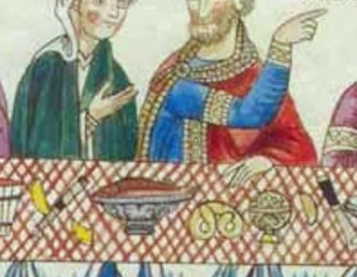
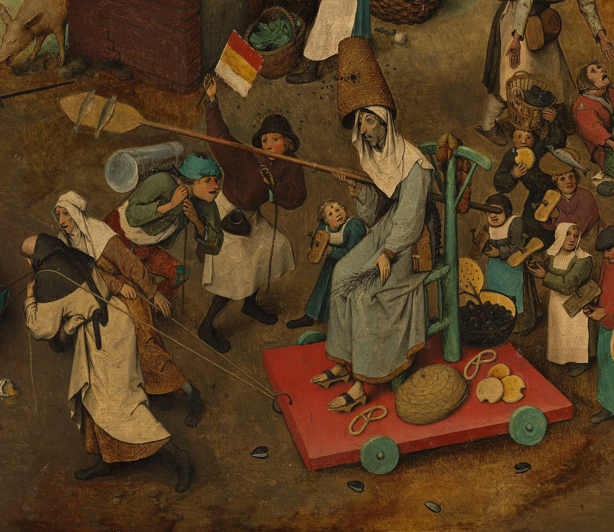
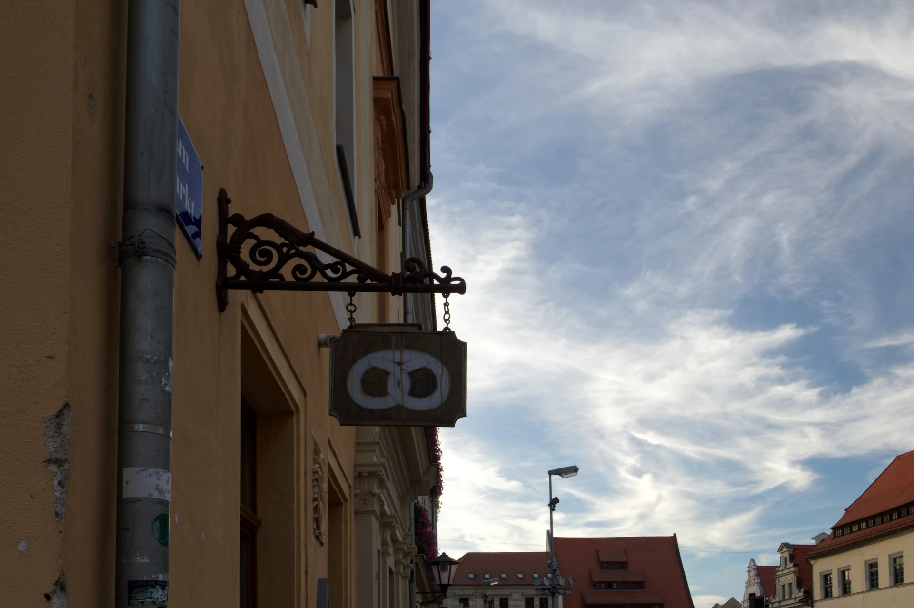

아직 펼치지 않은 카드
아직 펼치지 않은 카드
금식 전날의 잔치 · 4프레첼매듭처럼 꼬인 프레첼 모양은 무엇을 본떴다는 이야기가 있을까요?프레첼 모양은 무엇을 닮았을까?
사순절 앞 · 1559년의 그림플랑드르(오늘의 벨기에) · 빈 미술사 박물관
프레첼
밀가루와 물, 소금으로만 만든 프레첼은 달걀도 버터도 먹지 않던 옛 사순절에도 먹을 수 있는 빵이었어요. 1559년 브뤼헐은 축제의 마지막 날과 사순절이 맞붙는 광장을 그리며, 마른 ‘사순절’의 수레에 프레첼을 실었어요. 그림 속에서 사육제의 음식과 사순절의 음식을 하나씩 찾아보세요.
뚱뚱한 아저씨와 마른 아주머니가 음식으로 겨루는 그림이 있대! 프레첼은 어느 편에 숨어 있을까?
검수 전 시안이에요(기준서 1판). 장면에는 빈 미술사 박물관의 설명과 프레첼에 관한 기사, 그림 백과사전 연구에 있는 것만 옮겼어요. 610년 수도사 이야기처럼 기록이 없는 이야기는 그렇다고 밝혔어요. 상상은 ‘눈 감고 상상해 보기’에만 썼어요.
시안 확인용카드 단계 미리 보기
1
잔칫상의 꼬인 빵
프레첼(독일어로 브레첼)은 밀가루와 물, 소금으로 만드는 빵이에요. 중세의 그리스도인들은 사순절 동안 달걀과 돼지기름, 젖과 버터를 먹지 않았는데, 밀가루와 물로만 만든 프레첼은 이때에도 먹을 수 있었어요.
12세기 알자스의 호엔부르크 수녀원장 헤라트가 엮은 그림 백과사전 『기쁨의 정원』에는, 에스더 왕비와 왕의 잔칫상에 꼬인 빵이 놓여 있어요. 가장 오래된 프레첼 그림일지도 모른다고 해요.

다만 이 책의 원본은 1870년 전쟁 때 스트라스부르 도서관과 함께 불타 없어졌어요. 지금은 옮겨 그린 그림으로만 남아 있어서, 원본에도 프레첼이 그대로 있었는지는 확실하지 않대요.
아주 옛날 그림 속 잔칫상에 꼬인 빵이 있어! 프레첼일까?
물어보기식탁 위에서 꼬인 빵을 찾아볼래?
2
사순절의 수레
1559년 피터르 브뤼헐이 그린 「사육제와 사순절의 싸움」의 한 부분이에요. 비쩍 마른 ‘사순절’이 딱딱한 의자에 앉아 수레를 타고 와요. 수레는 수도사와 수녀가 힘겹게 끌어요.
사순절은 머리에 벌집을 쓰고, 청어 두 마리를 얹은 빵 삽을 창처럼 내밀어요. 둘레에는 프레첼과 사순절 빵, 생선과 홍합이 있어요. 모두 사순절에 흔히 먹던 음식이에요.

벌집은 그 무렵 교회를 나타내는 흔한 상징이었어요. 사순절 쪽 아이들의 이마에는 재의 수요일에 받는 재 십자가가 그려져 있어요.
벌집 모자를 쓴 아주머니가 청어 두 마리를 얹은 삽을 들고 있어!
물어보기빨간 수레 위에서 프레첼을 몇 개 찾을 수 있어?
3
사육제와 사순절의 싸움
축제의 마지막 날에서 사순절로 넘어가는 장터 광장이에요. 왼쪽 여관 앞에서는 뚱뚱한 ‘사육제’가 맥주 통에 올라타고, 오른쪽 교회 쪽에서는 마른 ‘사순절’이 수레를 타고 맞서요.
빈 미술사 박물관은 이 그림을 사육제와 사순절에 얽힌 네덜란드 풍습의 백과사전이라고 불러요. 그림 속 숫자를 하나씩 눌러, 두 편의 음식을 찾아보세요.
그림 속 숫자를 하나씩 눌러 보세요. ‘가까이 보기’를 누르면 그 자리를 크게 볼 수 있어요.

피터르 브뤼헐 「사육제와 사순절의 싸움」, 1559년 · 빈 미술사 박물관 · 그림: 피터르 브뤼헐(아버지) · 퍼블릭 도메인 · 위키미디어 공용
그림 위의 숫자나 아래 번호를 눌러 보세요.
여섯 곳을 다 찾았어요. 사순절 쪽에는 프레첼이 곳곳에 숨어 있어요.
박물관은 이런 우스꽝스러운 겨루기가 15~16세기에 실제로 벌어졌고, 그림 속 다른 모습들도 그때의 풍습 그대로라고 설명해요. 다만 이 모든 일이 한곳에서 한꺼번에 벌어지는 것은 브뤼헐이 지어낸 거예요.
그림은 어느 한쪽이 더 낫다고 말하지 않아요. 잔치와 금식, 사람 사는 두 끝을 나란히 보여 줘요.
뚱뚱한 아저씨는 고기 꼬챙이, 마른 아주머니는 생선 삽! 누가 이길까?
물어보기그림 속에서 프레첼을 몇 개나 찾을 수 있어?
4
빵집 간판이 된 프레첼
프레첼은 독일 남부 지방에서 적어도 12세기부터 빵 굽는 사람과 그 조합의 표지로 쓰였어요. 지금도 프레첼 모양 간판은 ‘여기가 빵집’이라는 표시예요.
이 간판은 독일 작센주 피르나의 시장 광장 8번지에 걸린 빵집 조합 표지예요.

빵집 간판에 프레첼이 그려져 있어. 여기가 빵집이라는 표시야!
물어보기우리 동네 빵집 간판에는 무엇이 그려져 있을까?
눈 감고 상상해 보기
찬바람 부는 장터 광장에 와플 굽는 냄새와 생선 비린내가 한데 섞여요. 왼쪽에서는 북과 피리 소리가 요란하고, 오른쪽 교회 쪽에서는 나무 딸랑이 소리가 따각따각 다가와요. 빨간 수레 위에서 노릇한 프레첼이 흔들려요.
눈을 감아 봐. 고소한 와플 냄새! 따각따각 딸랑이 소리가 다가와.
나의 자리
앞면에서 꼬인 모양이 무엇을 본떴을지 물었지요. 이제 프레첼을 보면 무엇이 먼저 떠오르나요?
다음에 프레첼을 먹을 때, 그림 속 누구를 떠올릴래?
마음에 닿는 한 줄을 고르거나 직접 써 보세요. 한 줄을 남기면 이 자리의 도장이 찍혀요. 이 기기에만 저장돼요.
더 깊이
궁금한 칸만 펼쳐 읽어도 괜찮아요.
알고 보면
그림이 걸린 곳 「사육제와 사순절의 싸움」은 오스트리아 빈 미술사 박물관에 있어요. 세로 118cm, 가로 약 164cm의 참나무 판에 그렸고, 왼쪽 아래 돌에 ‘BRVEGEL 1559’라고 적었어요. 아마 루돌프 2세 황제가 모았고, 1748년에 보물실에서 미술관으로 옮겨졌어요.
가려진 성상 오른쪽 교회 안의 성상은 천으로 덮여 있어요. 그 무렵 가톨릭 교회에서는 수난 주일부터 부활절까지 성상을 가리는 풍습이 있었어요.
룩셈부르크의 프레첼 주일 룩셈부르크에서는 사순절 넷째 주일을 ‘프레첼 주일(브레첼손덱)’이라고 불러요. 이날 마음에 둔 사람에게 달콤한 프레첼을 건네고, 마음이 같으면 부활절에 달걀로 답해요.
프레첼을 위한 운동 1973년 미국 애리조나의 한 신자가 ‘하느님을 위한 프레첼’ 운동을 시작해 프레첼을 신앙의 상징으로 알리려 했어요. 운동은 곧 사라졌고, 재의 수요일 ‘프레첼 기도’만 남았대요.
기록마다 다른 점
610년의 수도사 한 수도사가 610년쯤 남은 반죽을 기도하는 팔 모양으로 꼬아 아이들에게 상으로 주었다는 이야기가 널리 퍼져 있어요. 그곳을 이탈리아라고도, 남프랑스의 수도원이라고도 해요. 음식사학자 윌리엄 워이스 위버는 이 이야기를 뒷받침하는 기록이 전혀 없다고 하고, 미국 금주법 시대에 프레첼을 맥주와 떼어 놓으려고 생겨났다고 봐요.
가장 오래된 그림 『기쁨의 정원』의 꼬인 빵이 원본에도 있었는지, 옮겨 그리면서 더해졌는지는 확실하지 않아요. 연구자 다니엘 조이너는 이 점을 꼭 덧붙여야 한다고 말해요.
수레 위의 빵 어떤 글은 사순절의 수레에 프레첼과 와플, 홍합이 실렸다고 하고, 다른 글은 프레첼과 사순절 빵, 홍합, 양파라고 적어요.
이름의 뿌리 브레첼이라는 이름은 ‘작은 팔’을 뜻하는 라틴어 브라키올라(bracchiola)에서 왔다는 설명과, ‘팔찌’를 뜻하는 중세 라틴어 브라켈루스(bracellus)에서 왔다는 설명이 함께 있어요.
함께 읽는 말씀
말씀은 뜻만 옮기고, 본문은 대한성서공회 개역개정으로 이어 드려요.
에스더 5장 4~8절 에스더 왕비가 왕과 하만을 잔치에 청해요. 『기쁨의 정원』은 이 잔칫상에 꼬인 빵을 그렸어요.
마태복음 6장 16~18절 금식할 때 슬픈 얼굴을 하지 말고, 머리에 기름을 바르고 얼굴을 씻으라는 말씀이에요. 은밀히 보시는 아버지가 갚으신대요.
직접 가 보기
확인한 날 · 2026년 11월 18일 · 바뀌기 쉬운 정보라 정기적으로 다시 확인해요
「사육제와 사순절의 싸움」은 오스트리아 빈의 미술사 박물관에 걸려 있어요. 가기 전에 박물관 누리집에서 전시 여부를 확인해 주세요.
독일 작센주 피르나의 시장 광장에 가면 8번지 건물에서 프레첼 간판을 볼 수 있어요. 독일 남부와 알자스의 빵집에서도 프레첼 간판을 흔히 볼 수 있어요.
2027년 룩셈부르크의 프레첼 주일은 3월 7일이에요(서방 교회 부활절 3월 28일로 계산).
두 편의 음식 금박
그림 속 여섯 곳을 모두 찾아 읽으면 카드에 금박이 입혀져요.
그림 속 여섯 곳을 모두 찾아 읽기
아이와 함께 채색
아이와 함께 끝까지 보면 카드가 채색돼요.
아이와 함께 ‘영화처럼 보기’를 끝까지 보기
근거 보기 (9)
- 빈 미술사 박물관(KHM): The Fight between Carnival and Lent — 네덜란드 풍습의 백과사전, 15~16세기에 실제로 벌어진 우스꽝스러운 겨루기, 통에 올라탄 사육제와 고기 꼬챙이, 청어 두 마리를 얹은 빵 삽을 내민 마른 사순절, 다른 모습도 그때 풍습 그대로, 한곳에 한꺼번에 그린 것은 브뤼헐의 지어냄, 118×163.7cm, 서명, 루돌프 2세·1748년
- 위키백과(영어): The Fight Between Carnival and Lent — 왼쪽 여관과 오른쪽 교회, 푸줏간 주인 같은 사육제와 꼬챙이(새끼 돼지 머리·닭·소시지), 닭고기 파이 모자, 딱딱한 의자에 앉은 마른 사순절, 벌집은 교회의 상징, 수도사와 수녀가 끎, 프레첼·생선·사순절 빵·홍합·양파, 와플 굽는 여인, 생선 가게, 재 십자가, 가려진 성상, 어느 쪽도 더 낫다고 하지 않음
- 위키백과(영어): Pretzel — 밀가루와 물로 만든 프레첼은 달걀·돼지기름·젖·버터를 먹지 않던 사순절에도 먹음, 독일 남부에서 적어도 12세기부터 빵 굽는 사람과 조합의 표지, 『기쁨의 정원』의 그림, 이름의 뿌리(bracchiola · bracellus)
- 아틀라스 옵스큐라: Pretzels for Lent — 중세 그리스도인이 사순절에 먹음(그렉 듀스), 610년 수도사 이야기와 위버의 반박·금주법 시대, 브뤼헐 그림의 프레첼, ‘하느님을 위한 프레첼’ 운동(1973)
- 아틀라스 옵스큐라: 여성이 엮은 첫 백과사전 속 첫 프레첼 그림 — 헤라트와 『기쁨의 정원』, 에스더의 잔치, ‘가장 오래된’ 주장의 불확실함(다니엘 조이너), 1870년 스트라스부르 도서관 화재, 옮겨 그린 그림만 남음
- 피오나 그리피스, 『기쁨의 정원』 서론(존스 홉킨스 대학 프로젝트 뮤즈, PDF) — 원본은 1870년 8월 포위 때 스트라스부르 도서관과 함께 불탐, 남은 옮겨 그림과 기록
- 아트 앤 시올로지(artandtheology.org): 프레첼과 기도 — 중세 사순절에는 물에 사는 것을 뺀 동물성 식품(달걀·돼지기름·젖·버터)을 먹지 않음, 사순절의 수레에 프레첼·와플·홍합
- 룩셈부르크 정부 누리집: 프레첼 주일(브레첼손덱) — 사순절 넷째 주일, 달콤한 프레첼을 건네고 부활절에 달걀로 답함
- 위키미디어 공용: 피르나 시장 광장 8번지(Am Markt 8)의 빵집 조합 표지 사진 정보
그림·사진·소리 출처
‘처음 만나는 기독교 문화’의 깊은 카드예요. 카드 단계와 남긴 글은 이 기기에만 저장돼요.